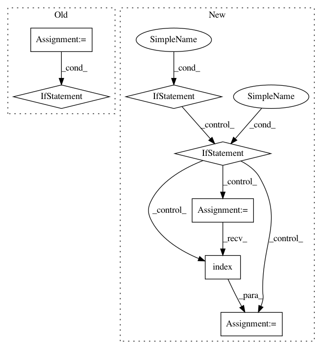

58efec0f2bc7e8de2ea9b89ec638d4a0a2d60537,python/ray/util/sgd/torch/distributed_torch_runner.py,LocalDistributedRunner,_try_reserve_and_set_cuda,#LocalDistributedRunner#,278
Before Change
// initialized because the env var is used later when
// starting the DDP setup.
os.environ["CUDA_VISIBLE_DEVICES"] = device
if use_found_device:
// Once cuda is initialized, torch.device ignores the os.env
// so we have to set the right actual device.
self._set_cuda_device(device)
else:
// if CUDA is not initialized, we can set the os.env.
// Even if initialized, we want to set the device to use BatchNorm.
// and make Torch think it only sees 1 GPU.
self._set_cuda_device("0")
def _set_cuda_device(self, device_str):
Sets the CUDA device for this current local worker.
if self._is_set:
raise RuntimeError("CUDA devices already set.")
After Change
// initialized because the env var is used later when
// starting the DDP setup.
os.environ["CUDA_VISIBLE_DEVICES"] = reserved_device
if visible_devices:
// We want to set the index on the visible devices list.
if reserved_device not in visible_devices:
raise RuntimeError(
"TorchTrainer reserved a device {} that was not in the "
"CUDA_VISIBLE_DEVICES {}. This may be because the "
"Ray cluster is not set with the right env vars. "
"If that is not the issue, please raise a "
"Github issue.".format(reserved_device, visible_devices))
devices = visible_devices.split(",")
scoped_index = devices.index(reserved_device)
self._set_cuda_device(str(scoped_index))
else:
// Once cuda is initialized, torch.device ignores the os.env
// so we have to set the right actual device.
self._set_cuda_device(reserved_device)
def _set_cuda_device(self, device_str):
Sets the CUDA device for this current local worker.
if self._is_set:
raise RuntimeError("CUDA devices already set.")
In pattern: SUPERPATTERN
Frequency: 3
Non-data size: 7
Instances
Project Name: ray-project/ray
Commit Name: 58efec0f2bc7e8de2ea9b89ec638d4a0a2d60537
Time: 2020-06-12
Author: rliaw@berkeley.edu
File Name: python/ray/util/sgd/torch/distributed_torch_runner.py
Class Name: LocalDistributedRunner
Method Name: _try_reserve_and_set_cuda
Project Name: prody/ProDy
Commit Name: 54a02c7a3ca3cce7e62f92e0a27244d27f8d9e83
Time: 2019-02-08
Author: hongchun@pitt.edu
File Name: prody/ensemble/functions.py
Class Name:
Method Name: refineEnsemble
Project Name: prody/ProDy
Commit Name: bb958949caaba2341ae5662c484d5106d68e4aed
Time: 2019-04-15
Author: hongchun@pitt.edu
File Name: prody/ensemble/functions.py
Class Name:
Method Name: refineEnsemble